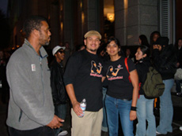

Cheesecake is Forced into a BIG PAYBACK - Young Workers United Victory!
Submitted on Wed, 08/31/2005 - 2:31am
Disclaimer - The following article is reposted here because it is an issue with some relevance to the IWW. The views of the author and the publisher do not necessarily agree with those of the IWW and vice versa. (Plus, they gave us a plug, so it's only right to return the favor!)
Originally published on www.indybay.org
Victory! We are happy to report the Cheesecake Factory has finally settled and workers will finally get their rightful piece of the pie. For three years, workers were denied breaks in the busiest and most profitable restaurant in the City. After two years of actions, worker organizing and public pressure, we won back pay and a new system! Workers across the state will get a $4.5 million settlement.
Through the course of the campaign, they’ve also won increased wages for the breaker position, instead of paying the breaking worker to take a break. We’ve built a solid crew in the kitchen who are standing up to abusive managers. In perhaps unrelated news, former General Manager Jeff Reznick has been transferred to Pensacola, a little town in mid-Florida. We invite you to celebrate with us and tell the press:
Workers Rights or Workers Fight!
Thursday September 1st at 10 am in Union Square
Thanks to all of you who attended actions and supported the Cheesecake workers!
Health is a Right! Workshop & KQED In other news, the YWU Education Committee has completed a popular education workshop called “Health Is A Right” about profits and power in the health care industry. We are inviting all organizations, classrooms and other groups to host the workshop. Just contact us below. You can also order a copy! We are asking for $10 donation (no one turned away) and the shipping and handling.
Look for one of our members on an October KQED special about health insurance. A YWU member and bartender extraordinaire will be featured as one of the many service sector workers who have to suffer without health insurance.
Other Worker Actions and Campaigns We just had a successful 16-person delegation, including all the workers, at a popular fast food restaurant. The manager had kicked, insulted and harassed workers, as well as not allowing them to speak Spanish and also “playing” mean tricks on workers, such as telling them water was cold when it was boiling hot. YWU members and the workers organized and now we are in negotiations with the supervisor. The manager’s hand was trembling when confronted by all of us and he had to take the rest of the day off.
We are also continuing to fight discrimination and for the minimum wage at a financial district taqueria. Stay tuned for upcoming actions.
We’ve changed break policies for Trader Vic’s bar and restaurant chain! Through our actions, the international restaurant has paid back pay to a YWU member and agreed to abide by labor law in their breaks policy!
Our Most Important Right: the Right to Party! Thanks and appreciation to Warren Mar and Suzie McDonough for hosting a fabulous house party! We danced the night away with plenty of great food and strong drinks. Thanks to all the contributors! Stay glam- we’ll see you at our next party. If you’re interested in throwing us a house party, please contact us below. We know how to make cosmos and margaritas. :)
young workers united * 415-621-4155 * workingyouth@hotmail.com
for more info on the Cheesecake Factory campaign go to: http://www.youngworkersunited.org/article.php?list=type&type=12
ECR Radio interview "Workers' Struggles: Voices from the Community" interview with Sonya Mehta, an organizer with the Young Workers United and various other organizers on the cusp - http://www.indybay.org/news/2005/08/1759185.php
Faultlines Article "The future of labor: organizing the service industry" by christian roselund http://www.indybay.org/news/2004/12/1710879.php
And if you are interested in learning more about similar organizing efforts check out: the Industrial Workers of the World site - http://www.iww.org the Kinko's Workers Unite site - http://www.kinkosworkersunite.info the Whole Food's Workers Unite site - http://www.wholeworkersunite.org and last but not least Sillicon Valley Debug for stories and organizing info about stuff going in the south bay http://www.siliconvalleydebug.com/
ps - http://www.indymedia.org is always good too...